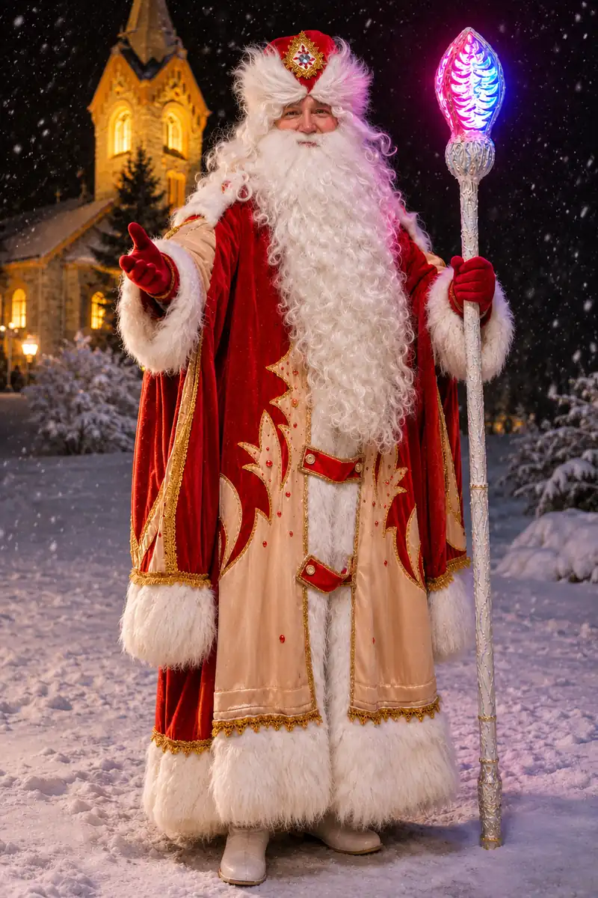
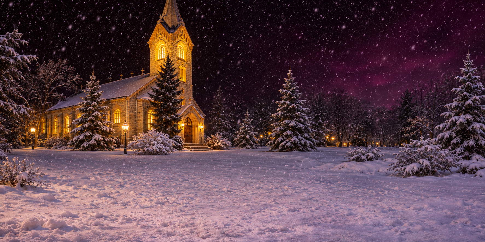

Проведи пальцем — движется только фон
Попробуем без швов
Дед Мороз стоит неподвижно, включая ноги. Перед ним нет движущихся ёлок. Земля под ботинками остаётся на месте, а церковь и зимний лес чуть поворачиваются позади.
Сцена готова к просмотру. Переключай оригинал и объёмную фотографию для сравнения.
На iPhone при выборе «Наклон телефона» Safari может попросить разрешение на датчик. Все настройки здесь пробные и не меняют рабочий сайт.
Новый широкий фон целиком

Это единое изображение, а не несколько склеенных участков. Церковь, зимний лес и снежная площадка находятся на одном непрерывном заднем плане. Прозрачный Дед Мороз расположен перед ним отдельным неподвижным слоем.